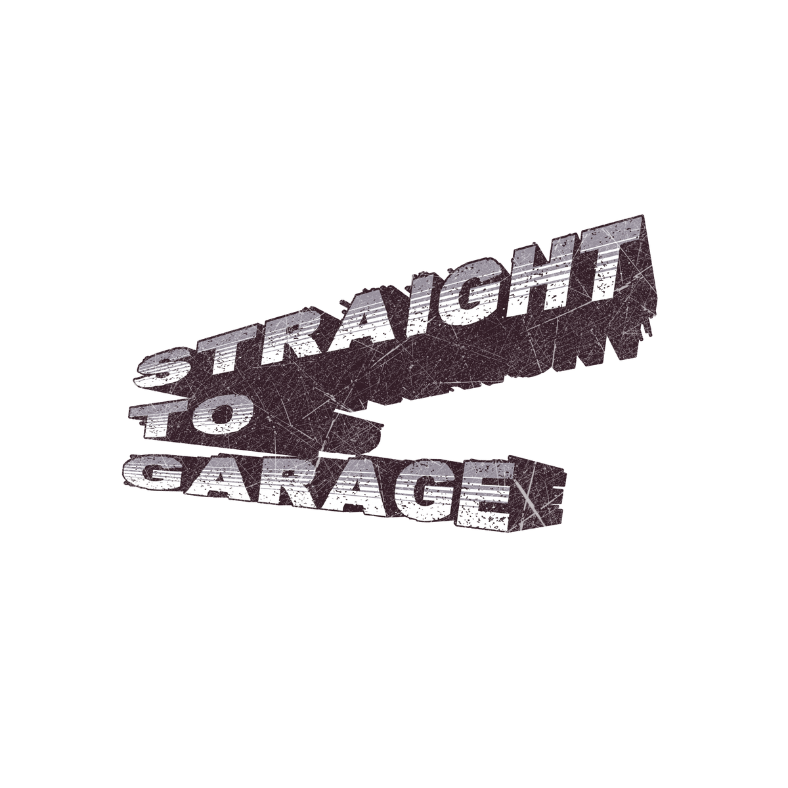

01 / 05
SYNE.
Resident DJ · Organiser
STRAGEオーナー。Dark GarageラインやSpeedGarageなど、オージースタイルをリスペクトしたサウンドを好む。
Sound Collective — VRChat

STRAGE VOL.2
SEE YOU ON THE FLOOR.
THE SOUND OF
THE UNDERGROUND…
Straight to Garage は、UKGの魂を守り続けるサウンドコレクティブ。
UKGの歴史や特性を追求し、深めることにこだわりを持っています。
アッパー系4/4の重厚なベースラインから、ミニマルでダークな2stepまで。そしてUKGに留まらず、UKBass Musicに関わる様々なジャンルの探求。
パーティーのオーガナイズはもちろん、ジャンルを愛する人々の集うコミュニティの形成を、VRChatから。
The Crew
Scroll →
Select an Event
イベントを選ぶとスケジュールが開きます — Tap an event to reveal its schedule
Open Call — Always Open
STRAGE VR では出演DJを通年募集しています。締切はありません — 届いたmixから順次、各回のラインナップを組んでいきます。
UK Garage / Speed Garage / Bassline を軸に回せる方歓迎です！
※ 選考結果・ラインナップの告知はDiscordで / Results announced on Discord
DON'T JUST LISTEN.
JOIN THE SCENE.
Community
How to Entry
エントリーの受付はすべてDiscord上で行っています。まずはサーバーへご参加ください。
出演エントリー entry-for-performing チャンネルに表示されている 「mixを応募する」 ボタンを押すと、入力フォームが出てきます。
フォームに下記の項目を入力して送信するだけ。内容は運営にだけ届き、他の応募者には見えません。
What You'll Send — 入力する項目